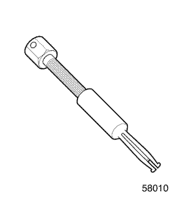

РАЗДЕЛ 5C2
СЦЕПЛЕНИЕ (С МЕХАНИЧЕСКИМ ПРИВОДОМ)
Внимание! Необходимо отсоединять отрицательный провод аккумулятора перед снятием или установкой любого электрического устройства, а также в тех случаях, когда возможно соприкосновение инструмента или оборудования с открытыми электрическими контактами. Отсоединение этого провода поможет избежать несчастного случая, а также повреждения автомобиля. Необходимо также, чтобы зажигание находилось в положении "B", если не будет требоваться иное.
ТЕХНИЧЕСКИЕ ХАРАКТЕРИСТИКИ
Моменты затяжки резьбовых соединений
Параметры
|
Н•м
|
Фунт-фут
|
Фунтов на дюйм
|
|
Болт нажимного диска
|
18 - 28
|
13 - 21
|
-
|
|
Болт и гайка рычага вилки выключения сцепления
|
10 - 16
|
7.5 - 12
|
-
|
|
Гайки троса привода сцепления
|
9 - 13
|
-
|
80 - 115
|
СПЕЦИАЛЬНЫЕ ИНСТРУМЕНТЫ
Таблица специальных инструментов

 
|
09917-58010
Съемник подшипника первичного вала
|

|
DW210-030
Трубка для снятия втулки
|

|
09924-17810
Приспособление для фиксации маховика
|

|
DW210-040
Приспособление для демонтажа/установки втулки
|
|
09925-98210
Приспособление для установки подшипника первичного вала
|

|
09930-30102
Отбойник
|

|
09943-88211
Приспособление для установки втулок и подшипников
|

|
DW210-010
Оправка для центровки ведомого диска сцепления
|
ДИАГНОСТИКА
Общая диагностика
Неисправность
|
Возможная причина неисправности
|
Способ устранения
|
|
Пробуксовка сцепления
|
- Нарушение регулировки троса привода.
|
- Отрегулировать трос привода сцепления.
|
- Износ или замасливание фрикционных накладок ведомого диска сцепления.
|
|
- Износ или замасливание поверхностей нажимного диска или маховика.
|
- Заменить нажимной диск или маховик.
|
- Ослабление или повреждение нажимной пружины
|
|
- Коррозия троса привода сцепления.
|
- Заменить трос привода сцепления.
|
|
Сцепление ведет
|
- Нарушение регулировки троса привода.
|
- Отрегулировать трос привода сцепления.
|
- Нажимная пружина изношена или ослабла.
|
|
- Износ или коррозия шлицев первичного вала КПП или ведомого диска сцепления.
|
- Заменить первичный вал или ведомый диск сцепления.
|
- Сильное коробление ведомого диска сцепления.
|
|
- Износ ведомого диска сцепления.
|
|
|
Неполное выключение сцепления
|
- Перекос или повреждение ведомого диска сцепления.
|
|
- Износ или коррозия шлицев первичного вала КПП или ведомого диска сцепления.
|
- Заменить первичный вал или ведомый диск сцепления.
|
- Нарушение работы оси вилки выключения сцепления.
|
- Заменить ось вилки выключения сцепления.
|
- Повреждение троса привода сцепления.
|
- Заменить трос привода сцепления.
|
|
Педаль сцепления не возвращается в исходное положение
|
- Заедание подшипника выключения сцепления.
|
- Смазать и отрегулировать подшипник выключения сцепления.
|
- Нажимная пружина ослабла.
|
|
- Повреждение троса привода сцепления.
|
- Заменить трос привода сцепления.
|
|
Вибрация сцепления
|
- Замасливание фрикционных накладок ведомого диска сцепления.
|
|
- Затруднено перемещение подшипника выключения сцепления по шлицам первичного вала КПП.
|
- Смазать подшипник выключения сцепления.
|
- Коробление или плохой контакт фрикционных накладок ведомого диска сцепления.
|
|
- Ослабли заклепки ведомого диска сцепления.
|
|
- Ослабли пружины демпфера ведомого диска.
|
|
- Деформация поверхности нажимного диска сцепления или маховика.
|
- Заменить нажимной диск или маховик.
|
- Слабое крепление подвески двигателя, болтов или гаек.
|
- Затянуть резьбовое соединение или заменить подвеску.
|
|
Повышенный шум сцепления
|
- Поломка или износ подшипника выключения сцепления.
|
- Заменить подшипник выключения сцепления.
|
- Износ подшипника первичного вала КПП.
|
- Заменить подшипник первичного вала КПП.
|
- Трещина ведомого диска сцепления.
|
|
- Шум в нажимном диске и нажимной пружине.
|
|
- Нарушение регулировки троса привода.
|
- Отрегулировать трос привода сцепления.
|
- Износ троса привода сцепления.
|
- Заменить трос привода сцепления.
|
|
Рывки при работе сцепления
|
- Замасливание фрикционных накладок ведомого диска сцепления.
|
|
- Повышенный износ фрикционных накладок ведомого диска сцепления.
|
|
- Заклепки выступают над поверхностью фрикционной накладки.
|
|
- Ослабли пружины демпфера ведомого диска.
|
|
Работа педали сцепления

Свободный ход педали сцепления
Педаль сцепления не должна иметь свободный ход.
Ход педали сцепления (A)
|
Ход педали
|
120 - 130 мм (4,7 - 5,1 дюйма)
|
Расстояние от педали до пола в момент включения сцепления (B)
Запустить двигатель и проверить, соответствует ли расстояние от педали до пола указанному диапазону в различных режимах: на холостом ходу, на подъеме, при включенном стояночном тормозе.
|
Расстояние от педали до пола в момент включения
сцепления
|
50 - 60 мм
(1,9 - 2,3 дюйма)
|
Регулировка троса привода сцепления

Если сцепление включается/выключается с рывками, следует отрегулировать трос привода сцепления с помощью предусмотренной для этого регулировочной гайки.
Трос привода сцепления
Проверить трос привода сцепления и заменить его на новый при обнаружении одного из следующих дефектов:
- Повышенный износ троса
- Ослабление кабеля
- Изгиб или иная деформация кабеля
- Повреждение защитного кожуха
- Распустившийся конец кабеля
РАСПОЛОЖЕНИЕ КОМПОНЕНТОВ
Компоненты сцепления

- Ведомый диск
- Нажимной диск
- Подшипник выключения сцепления
- Вилка выключения сцепления
- Втулка вилки выключения сцепления (№1)
- Втулка вилки выключения сцепления (№2)
- Уплотнительное кольцо вилки выключения сцепления
- Рычаг вилки выключения сцепления
- Кронштейн троса привода сцепления
- Регулировочная гайка троса привода сцепления
- Задняя пластина выключения сцепления
- Шайба
- Передняя пластина выключения сцепления
- Трос привода сцепления
- Педаль сцепления
ТЕХНИЧЕСКОЕ ОБСЛУЖИВАНИЕ И РЕМОНТ
ТЕХНИЧЕСКОЕ ОБСЛУЖИВАНИЕ БЕЗ ДЕМОНТАЖА С АВТОМОБИЛЯ

Нажимной диск, ведомый диск сцепления и подшипник первичного вала КПП
Необходимое оборудование
09917-58010: приспособление для снятия подшипника первичного вала КПП
09924–17810: приспособление для фиксации маховика
09925-98210: приспособление для установки подшипника первичного вала КПП
DW210-010: оправка для центровки ведомого диска сцепления
Порядок снятия
- Снять КПП с автомобиля. См. Раздел 5B2, "Пятиступенчатая механическая коробка переключения передач (Y4M)".

- Снять нажимной диск и ведомый диск сцепления.
- Зафиксировать маховик с помощью специнструмента 09924–17810.
- Выкрутить болты нажимного диска (1).
- Снять нажимной диск и ведомый диск сцепления (2).

- Снять подшипник первичного вала КПП с помощью съемника 09917-58010, фиксатора 09924-17810 и ключа.

Порядок осмотра - нажимной диск и ведомый диск сцепления
- Проверка нажимного диска.
- Проверить лепестки нажимной пружины на ослабление или повреждение (1).
- Проверить поверхность диска на замасливание (2).

- Проверка ведомого диска сцепления.
- Измерить глубину утапливания головки заклепки относительно поверхности диска. Если измеренное расстояние меньше допустимого, заменить диск.
-
- Единица, мм (дюйм)
|
Глубина утапливания головки заклепки
|
Стандарт
|
Предельное значение
|
|
1.2 (0.047)
|
0.5 (0.02)
|
- Заменить ведомый диск сцепления, если фрикционные замаслились накладки или ослабли заклепки.

- Осевое биение ведомого диска сцепления.
- Проверить осевое биение ведомого диска сцепления. Если биение больше допустимого, заменить диск.
-
- Единица, мм (дюйм)
|
Предельное значение осевого
биения диска (периферийное)
|
0.7 (0.028)
|

Порядок установки
- Установка проводится в последовательности, обратной снятию.
- Установить подшипник первичного вала КПП с помощью приспособления 09925–98210 и фиксатора 09924-17810.

- Установить нажимной и ведомый диск сцепления.
- Установить ведомый диск сцепления.
- Установить нажимной диск сцепления (1).
- Отцентрировать нажимной и ведомый диски относительно маховика с помощью оправки DW210-010 и фиксатора 09924-17810.
- Вкрутить болты крепления нажимного диска к маховику.
Затянуть
Затянуть болты моментом 18-28 Н•м (13-21 фунт-фут).
- Установить коробку передач в автомобиль. См. Раздел 5B2, "Пятиступенчатая механическая коробка переключения передач (Y4M)".

Подшипник выключения, вилка выключения сцепления и муфта
Необходимое оборудование
DW210-030: трубка для снятия втулки
DW210-040: приспособление для снятия/установки втулки
09930-30102: отбойник
09943-88211: приспособление для установки втулок и подшипников
Порядок снятия
- Снять КПП с автомобиля. См. Раздел 5B2, "Пятиступенчатая механическая коробка переключения передач (Y4M)".
- Снять рычаг вилки выключения сцепления. См. "Рычаг вилки выключения сцепления" в этом разделе.

- Снять подшипник выключения сцепления.
- Снять вилку выключения сцепления и втулку.
- Снять втулку (№2) и сальник с помощью съемника DW210-040 и молотка.
- Снять вилку выключения сцепления (1).

- Вставить метчик (M16X1.5) во втулку (№1) (2).

- Надеть трубку для снятия втулки DW210-030 на метчик.
- Надеть отбойник 09930-30102 на конец трубки для снятия втулки DW210-030.
- Извлечь втулку (№1) движением на себя.

Порядок проверки - подшипник выключения и вилка выключения сцепления
- Проверка подшипника выключения сцепления.
- Проверить наличие шума в работе подшипника, следов износа или повреждений.
- Проверить подшипника на заедание при вращении.
- При необходимости заменить подшипник.

- Проверка вилки выключения сцепления.
- Проверить вилку на деформацию (1).
- Проверить вилку на износ (2).
- При необходимости заменить вилку выключения сцепления.

Порядок установки
- Установка проводится в последовательности, обратной снятию.
- Установить втулку вилки выключения сцепления (№1) с помощью трубки DW210-030, приспособления для установки втулок и подшипников 09943-88211 и молотка.

- Установить вилку выключения сцепления.
- Смазать вилку выключения сцепления и втулку.
- Установить втулку вилки выключения сцепления (№2) и сальник с помощью приспособления для установки втулок DW210-040 и молотка.

- Установить подшипник выключения сцепления.
- Смазать шлицы первичного вала КПП универсальной смазкой (1).
- Смазать внутреннюю поверхность подшипника выключения и сопрягаемую поверхность первичного вала КПП универсальной смазкой (2).
- Установить подшипник выключения сцепления.
- Установить рычаг вилки выключения сцепления. См. "Рычаг вилки выключения сцепления" в этом разделе.
- Установить коробку передач в автомобиль. См. Раздел 5B2, "Пятиступенчатая механическая коробка переключения передач (Y4M)".

Рычаг вилки выключения сцепления
Порядок снятия
- Отсоединить трос привода сцепления.
- Снять регулировочную гайку (1).
- Снять заднюю пластину выключения сцепления, шайбу и переднюю пластину выключения сцепления (2).
- Отсоединить трос (3).

- Снять рычаг вилки выключения сцепления.
- Снять болт и гайку (1).
- Снять рычаг вилки выключения сцепления (2).

Порядок установки
- Установка проводится в последовательности, обратной снятию.
- Установить рычаг вилки выключения сцепления.
- Установить рычаг вилки выключения сцепления, выровняв его относительно отметки на оси вилки (1).
Затянуть
Затянуть болт и гайку моментом 10-16 Н•м (7,5-12 фунт-футов).
- Отрегулировать трос привода сцепления. См. "Диагностика" в этом разделе.
Трос привода сцепления
(показано левостороннее рулевое управление, правостороннее аналогично)
Порядок снятия
- Снять трос привода сцепления с КПП.
- Снять регулировочную гайку (1).
- Снять заднюю пластину выключения сцепления, шайбу и переднюю пластину выключения сцепления (2).
- Вытянуть и снять трос из монтажного отверстия (3).

- Отсоединить трос привода сцепления от педали сцепления.

- Снять аккумулятор. См. Раздел 1E, Электрическая система двигателя.
- Скрутить гайки крепления троса и вынуть трос.
Порядок установки
- Вставить трос привода сцепления и закрепить его гайками.
Затянуть
Затянуть гайки моментом 9-13 Н•м (80-115 фунт-дюймов).
- Установить аккумулятор.
- Подсоединить трос привода сцепления к педали.
- Закрепить трос привода сцепления на КПП.
- Отрегулировать трос привода сцепления. См. "Диагностика" в этом разделе.
- Смазать штифт.

Педаль сцепления
(показано левостороннее рулевое управление, правостороннее аналогично)
Порядок снятия
- Отсоединить трос привода сцепления. См. "Трос привода сцепления" в этом разделе.
- Снять педаль сцепления.
- Отсоединить возвратную пружину педали сцепления.
- Выкрутить гайку.
- Снять ось педали.
- Снять педаль сцепления.
- Снять втулки.
- Снять возвратную пружину педали сцепления.
Порядок установки
Примечание: Смазать ось педали, втулки и пружину.
- Установить возвратную пружину педали.
- Установить втулки.
- Установить педаль сцепления.
- Установить ось педали.
- Накрутить гайку.
- Закрепить возвратную пружину педали сцепления.
- Присоединить трос привода сцепления.
- Отрегулировать трос привода сцепления. См. "Диагностика" в этом разделе.
ОБЩЕЕ ОПИСАНИЕ И РАБОТА СИСТЕМЫ
Ведущие детали
Ведущими элементами конструкции являются две плоские поверхности, механически обработанные и отшлифованные. Одна из них - это задняя поверхность маховика двигателя, а вторая - поверхность нажимного диска. Нажимной диск заключен в кожух сцепления, который крепится к маховику болтами.
Ведомые детали
Ведомым элементом конструкции является ведомый диск сцепления со шлицевой втулкой, которая свободно перемещается на шлицах первичного вала КПП, передавая на него крутящий момент.
Контакт между ведущими и ведомыми элементами сцепления обеспечивается усилием пружины. Источником этого усилия является нажимная пружина диафрагменного типа, установленная между нажимным диском и кожухом сцепления.
Рабочие элементы
Система привода сцепления состоит из педали сцепления, вилки выключения сцепления, троса привода, рычага вилки и подшипника выключения. При нажатии на педаль сцепления вилка поворачивается вокруг оси и надавливает на подшипник выключения. Подшипник передает усилие на лепестки пружины нажимного диска, размыкая сцепление.